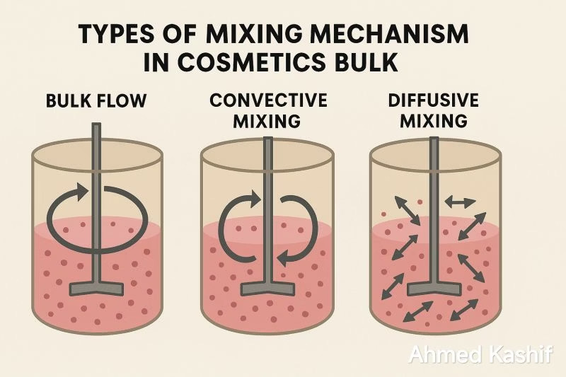
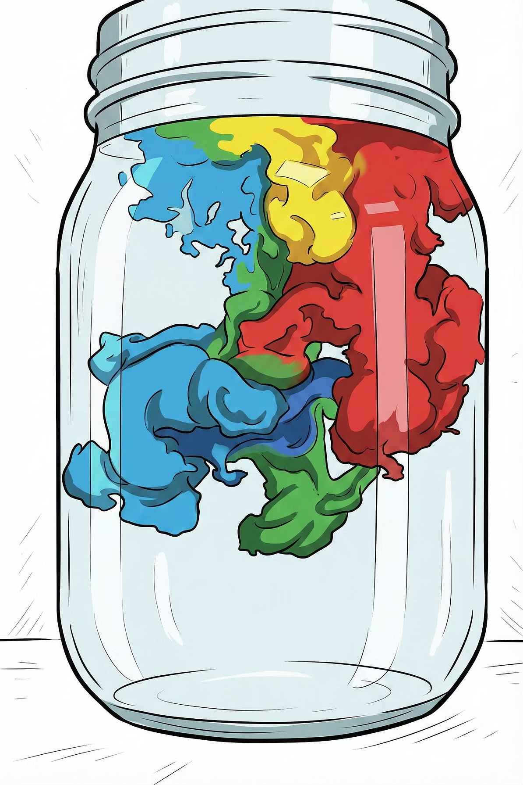
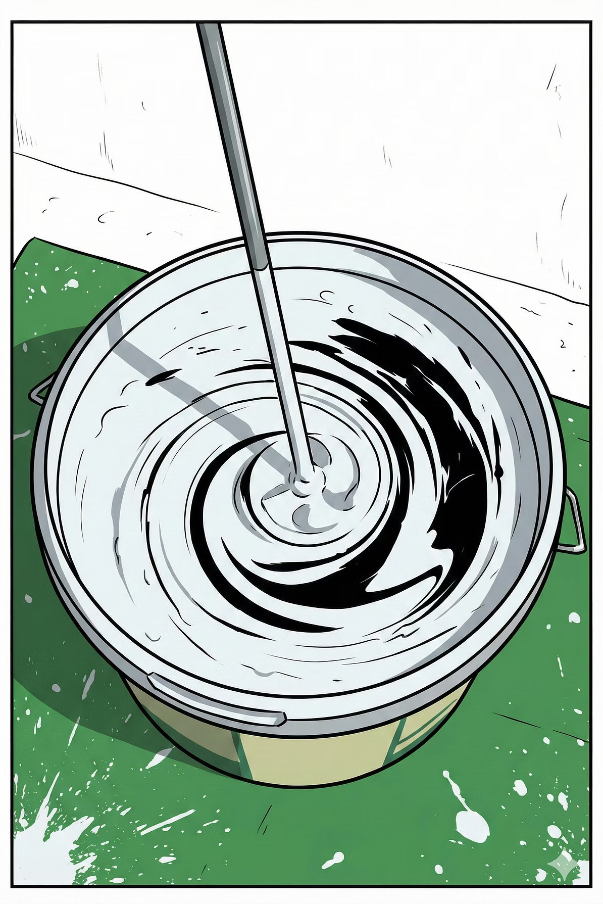
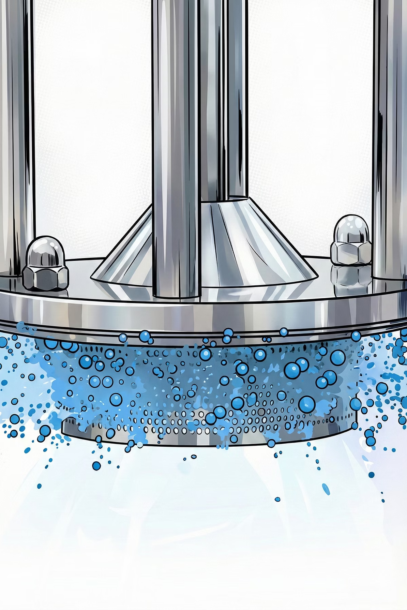

IQYA-2031 · 2026-10
Mezclado de fluidos
Proyecto de Operaciones Unitarias · Luis H. Reyes
Agitación vs. mezclado
Mecanismos de mezclado
Tiempo de mezclado
Retos de diseño
IQYA-2031 · 2026-10
Proyecto de Operaciones Unitarias · Luis H. Reyes
Introducción
Comprender que la agitación es la causa y el mezclado es el efecto deseado del proceso.
Reconocer los tres mecanismos fundamentales que gobiernan la homogeneización: convección, dispersión turbulenta y difusión molecular.
Definir y aplicar el concepto de "tiempo de mezclado" (tm) como métrica clave del rendimiento.
Entender cómo la viscosidad, las fases inmiscibles y la geometría del tanque impactan el proceso de mezclado.
Conceptos fundamentales
La agitación y el mezclado son conceptos relacionados pero distintos.
Es la acción de inducir movimiento en un fluido mediante una fuerza externa, usualmente un impulsor. La agitación es el input de energía.
Es el resultado de la agitación. Es el proceso que reduce la no uniformidad de concentración, temperatura o propiedades en el volumen del fluido hasta alcanzar un estado homogéneo.
Mecanismos fundamentales
El mezclado ocurre a diferentes escalas simultáneamente:
Movimiento a gran escala del fluido generado directamente por el impulsor. Responsable de transportar grandes porciones de material de una parte del tanque a otra. Es el mecanismo más rápido y energéticamente dominante.

Mecanismos fundamentales
El mezclado ocurre a diferentes escalas simultáneamente:
A una escala intermedia, los remolinos o "eddies" turbulentos causan un mezclado caótico y rápido, rompiendo y entrelazando las porciones de fluido. Este mecanismo es crucial en el régimen turbulento (Re > 104).

Mecanismos fundamentales
El mezclado ocurre a diferentes escalas simultáneamente:
A la escala más pequeña, las moléculas se mueven aleatoriamente debido a su energía térmica. Es un proceso muy lento, pero es el que logra la homogeneización final a nivel molecular. En la mayoría de los procesos industriales turbulentos, su efecto es secundario frente a la convección y la turbulencia.

Tiempo de mezclado
La métrica más importante para evaluar la efectividad de un sistema de mezclado.
El tiempo de mezcla (tm) o (θ95) es el tiempo que tarda un fluido agitado en alcanzar un 95% de homogeneidad. Es un parámetro crítico en ingeniería química y en procesos de manufactura. Se utiliza para evaluar la eficiencia de la mezcla y para predecir resultados al escalar procesos de producción.
Tiempo de mezclado
Para medir el tiempo de mezcla, se añade una sustancia trazadora al fluido y se monitorea su concentración a lo largo del tiempo mediante sensores u otros métodos. Algunos métodos comunes son:
Se inyecta en el fluido una pequeña cantidad de solución salina como trazador. Varias sondas de conductividad ubicadas en diferentes puntos del recipiente registran el momento en que la sal se dispersa de manera uniforme.
Se añade un colorante al fluido. Posteriormente se emplea el procesamiento digital de imágenes para analizarlas y determinar cuándo el color se vuelve uniforme.
En fluidos de alta viscosidad, el tiempo de mezcla puede determinarse mediante una decoloración química usando indicadores ácido-base.
Tiempo de mezclado
Varios factores afectan el tiempo de mezcla y la eficiencia general de un mezclador:
El tiempo de mezcla es inversamente proporcional a la velocidad del agitador. Una agitación más rápida suele reducir el tiempo de mezcla.
En fluidos más viscosos, el tiempo de mezcla es mayor.
La geometría específica del equipo de mezcla influye en los patrones de flujo y en el tiempo de mezcla.
La forma del tanque y la presencia de deflectores afectan de manera significativa los patrones de flujo y la eficiencia global de la mezcla.
El punto donde se introduce el trazador o el reactivo influye en el tiempo necesario para alcanzar la homogeneidad.
Tiempo de mezclado
El tiempo de mezclado no se reduce fácilmente. Una simplificación útil muestra que:
$$t_m \propto \left( \frac{T^3}{P} \right)^{1/3}$$
donde T = diámetro del tanque y P = potencia consumida
Tiempo de mezclado
El tiempo de mezclado es un parámetro empírico que se mide experimentalmente.
Se introduce una pequeña cantidad de un trazador en un punto del tanque. Puede ser un colorante, una sal (conductividad), o un ácido/base (pH).
Sensores en uno o varios puntos del tanque, típicamente donde se espera mezclado más lento.
Se registra la propiedad vs tiempo. $t_m$ se alcanza cuando todas las lecturas se estabilizan dentro de un rango definido (ej. ±5%) del valor de equilibrio.

Retos en el mezclado
Cuando la viscosidad del fluido es alta, el régimen de flujo cambia de turbulento a laminar ($Re < 10$).

Retos en el mezclado
Retos en el mezclado
El objetivo no es crear una solución, sino una dispersión o emulsión (ej. aceite en agua).
Se requiere alta cizalla para romper las gotas de la fase dispersa y vencer la tensión interfacial que busca que se vuelvan a unir (coalescencia).

Cierre
El mezclado es el objetivo final de la agitación y se logra a través de mecanismos de convección, turbulencia y difusión.
El tiempo de mezclado (tm) es la métrica clave de rendimiento. Reducirlo es energéticamente costoso.
El diseño del sistema de mezclado debe adaptarse a las propiedades del fluido. La alta viscosidad y las fases inmiscibles requieren configuraciones y tipos de impulsores especializados.
Aplicación al proyecto
En los fermentadores, un mezclado eficaz es fundamental:
Asegura una distribución uniforme de nutrientes para la levadura, optimizando el proceso de fermentación.
Mantiene una temperatura homogénea, evitando puntos calientes que podrían dañar el cultivo.
Garantiza un pH constante en todo el tanque para condiciones óptimas de fermentación.